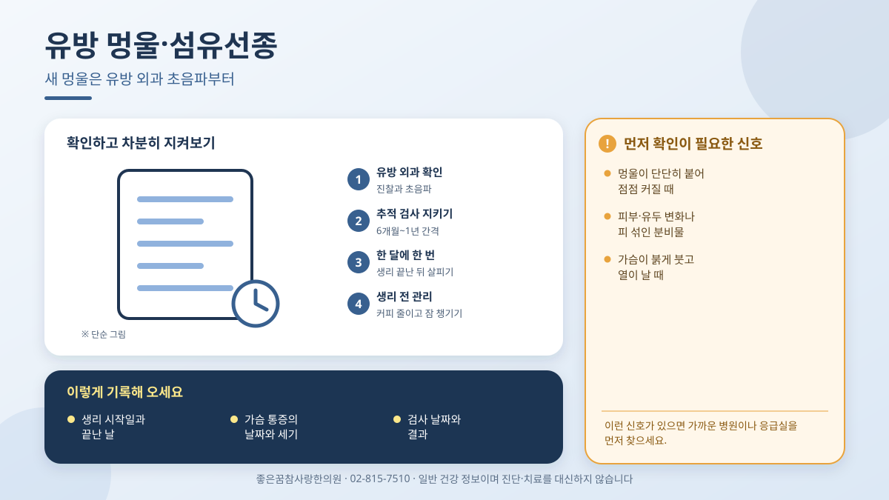

이종호 한의사 감수좋은꿈참사랑한의원 대표원장 (한의사 면허번호 19769)발행 2026-11-26 · 수정 2026-11-26
이 글의 차례
샤워를 하다 비누 거품 사이로 손끝에 무언가 동그랗게 걸립니다. 다시 만져 보니 콩알만 한 멍울이 미끄러지듯 움직입니다. 그 순간부터 머릿속이 복잡해집니다. 혹시 나쁜 건 아닐까, 언제부터 있었을까, 병원에는 어디로 가야 하지.
진료실에서 이 이야기를 꺼내시는 분들은 대개 이미 며칠을 혼자 고민한 뒤입니다. 바쁜 일정 때문에, 혹은 결과를 듣기가 두려워 검사를 미루다 보니 불안만 커져 있습니다. 어떤 분은 유방 초음파에서 섬유선종이라는 말을 듣고 지켜보자는 설명을 들었지만, 그래도 자꾸 손이 가슴으로 간다고 하십니다.
먼저 말씀드리고 싶은 것은, 유방에서 만져지는 멍울의 상당수는 양성이라는 점입니다. 생리 주기에 따라 커졌다 작아지는 섬유낭성 변화, 젊은 여성에게 흔한 섬유선종, 물이 찬 낭종이 대표적입니다. 다만 만져지는 느낌만으로는 구분할 수 없기 때문에, 새로운 멍울을 발견했다면 유방 외과에서 확인을 받는 것이 첫 순서입니다.
이 글에서는 유방 멍울의 종류와 왜 생기는지, 병원에서 하는 검사, 섬유선종을 지켜보는 동안 생활에서 챙길 것, 그리고 한의원에서 함께 살필 수 있는 부분을 차근차근 정리해 보겠습니다.
유방 멍울은 어떤 것들이 있나요?
가장 흔한 것은 섬유낭성 변화입니다. 생리 전에 가슴이 붓고 아프며 울퉁불퉁한 덩어리가 만져지다가, 생리가 끝나면 줄어드는 모습입니다. 양쪽 가슴에 비슷하게 나타나는 경우가 많고, 질병이라기보다 호르몬 변화에 따른 유방 조직의 반응으로 봅니다.
섬유선종은 유방의 젖샘과 섬유 조직이 함께 자라 만들어진 양성 혹입니다. 10대 후반에서 30대에 흔하고, 만지면 단단하면서도 매끈하고, 손가락으로 밀면 이리저리 잘 움직이는 것이 특징입니다. 대부분 크기가 거의 변하지 않거나 천천히 자라며, 일부는 시간이 지나며 작아지기도 합니다.
유방 낭종은 젖샘 안에 물이 고인 주머니입니다. 30대 후반에서 40대에 흔하고, 생리 주기에 따라 크기가 달라지기도 합니다. 초음파로 쉽게 확인되며, 크고 아프다면 물을 빼내는 시술을 하기도 합니다.
이 밖에 지방 덩어리, 염증으로 생긴 멍울, 유두 아래의 관이 넓어진 상태 등이 있습니다. 드물지만 유방암도 멍울로 처음 발견되기 때문에, 새로 생긴 멍울은 종류와 상관없이 한 번은 검사로 확인하는 것이 좋습니다.
왜 유방에 멍울이 생길까요
유방 조직은 여성 호르몬에 아주 민감하게 반응합니다. 생리 주기마다 에스트로겐과 프로게스테론이 오르내리면서 젖샘이 붓고 가라앉기를 반복하는데, 이 반응이 고르지 않으면 섬유낭성 변화나 낭종이 생깁니다.
섬유선종도 호르몬의 영향을 받습니다. 임신이나 수유 중에 커지기도 하고, 폐경 뒤에는 작아지는 경우가 많습니다. 왜 어떤 분에게만 생기는지는 모두 밝혀지지 않았지만, 유방 조직 일부가 호르몬에 더 크게 반응한 결과로 봅니다.
잠이 부족하고 스트레스가 많은 시기, 카페인을 많이 드시는 시기에 생리 전 가슴 통증과 멍울감이 더 심해졌다는 분이 많습니다. 모든 분에게 해당되지는 않지만, 생활의 리듬이 호르몬의 흔들림에 영향을 줄 수 있습니다.
한의학에서는 생리 전에 가슴이 붓고 옆구리가 당기며 예민해지는 흐름을 기운이 한곳에 뭉치고 막힌 모습으로 보기도 합니다. 마음이 쫓기고 한숨이 잦으며 목에 무언가 걸린 듯한 느낌이 함께 있는 분이 많아, 멍울 자체보다 그 바탕의 긴장을 함께 살핍니다.
병원에서는 이렇게 확인합니다
유방 외과에서는 먼저 손으로 만져 보는 진찰과 함께 초음파 검사를 합니다. 40대 이상이라면 유방 촬영을 함께 하기도 합니다. 초음파에서 모양이 전형적인 섬유선종이나 낭종이라면 정해진 간격으로 다시 보며 지켜보는 경우가 많습니다.
모양이 애매하거나 크기가 빠르게 커진다면 가는 바늘로 조직을 조금 떼어 보는 조직 검사를 권합니다. 결과에 따라 지켜보기도 하고, 크기가 크거나 불편이 크면 제거 시술을 상의하기도 합니다.
지켜보기로 했다면 보통 6개월에서 1년 간격으로 초음파를 다시 봅니다. 이 일정을 지키는 것이 지켜보는 동안 가장 중요한 일이니, 다음 검사 날짜를 달력에 꼭 적어 두세요.
비슷한 불편과 이렇게 나눠 봅니다
생리 전에만 양쪽 가슴이 붓고 아프며, 생리가 끝나면 가라앉는다면 주기성 유방통일 가능성이 큽니다. 이때 만져지는 울퉁불퉁함도 생리 뒤에 줄어드는지 함께 보시면 좋습니다.
생리 주기와 상관없이 한쪽 가슴의 한 자리만 계속 아프다면 늑골 주변 근육이나 연골의 통증일 수도 있습니다. 가슴 앞쪽 뼈와 연골이 만나는 자리를 누를 때 아프다면 늑연골염을 함께 생각해 봅니다. 그래도 새로 생긴 통증이 계속된다면 유방 검사는 한 번 받아 보시는 편이 마음이 놓입니다.
수유 중에 가슴 한쪽이 붉게 붓고 열이 나며 아프다면 유선염일 수 있습니다. 이때는 산부인과나 유방 외과 진료를 먼저 받으셔야 합니다.
스스로 점검해 보세요
다음 질문을 떠올려 보시면 진료실에서 이야기를 나누기가 쉬워집니다.
- 멍울을 처음 발견한 것은 언제인가요?
- 생리 주기에 따라 크기나 통증이 달라지나요?
- 만지면 잘 움직이나요, 단단히 붙어 있나요?
- 유방 외과에서 검사를 받으셨나요? 결과는 무엇이었나요?
- 유두에서 분비물이 나온 적이 있나요?
- 가족 가운데 유방암이나 난소암을 앓은 분이 있나요?
- 생리 전 가슴 통증과 예민함이 심한 편인가요?
집에서 스스로 살펴보는 법
생리가 끝나고 며칠 뒤, 가슴이 가장 부드러운 때에 한 달에 한 번 스스로 살펴보세요. 거울 앞에서 양팔을 내리고 올리며 가슴 모양과 피부, 유두의 변화를 보고, 누운 자세에서 손가락 세 개의 끝으로 가슴 전체와 겨드랑이까지 작은 원을 그리며 만져 봅니다.
스스로 살펴보는 목적은 멍울의 종류를 가려내는 것이 아니라, 평소의 내 가슴을 알아 두고 새로 달라진 것을 빨리 알아차리는 데 있습니다. 매일 만지며 확인하면 오히려 불안이 커질 수 있어, 한 달에 한 번이 적당합니다. 자가 검진은 병원 검진을 대신하지 않으니, 나이에 맞는 정기 검진도 함께 챙기세요.
나이와 가족력에 맞춰 검진을 챙기세요
국가 건강검진에서는 40세 이상 여성에게 2년마다 유방 촬영을 권합니다. 가슴 조직이 촘촘한 치밀 유방이라는 말을 들으셨다면 유방 촬영만으로는 잘 보이지 않는 부분이 있어, 초음파를 함께 받을지 담당 선생님과 상의해 보세요.
어머니나 자매 가운데 유방암이나 난소암을 앓은 분이 있다면 검진을 시작하는 나이와 간격이 달라질 수 있습니다. 가족력은 유방 외과 진료 때 꼭 먼저 말씀해 주세요. 가족력이 있다고 해서 같은 길을 걷는다는 뜻은 아니지만, 조금 더 일찍, 조금 더 자주 확인할 이유는 됩니다.
검진 결과지는 한곳에 모아 두시면 좋습니다. 병원을 옮기더라도 이전 사진과 비교할 수 있어서, 작은 변화를 알아차리는 데 큰 도움이 됩니다.
진료실에서 자주 듣는 걱정
"섬유선종이 암으로 바뀌지는 않나요"라는 질문을 가장 많이 듣습니다. 일반적인 섬유선종은 양성 혹이며, 정기적으로 크기와 모양을 확인하며 지켜보는 것이 보통입니다. 걱정이 크다면 담당 선생님께 지켜보기로 한 이유를 직접 여쭤보세요.
"멍울을 자꾸 만지면 커지나요"라는 걱정도 있습니다. 만진다고 커지지는 않지만, 자꾸 눌러 확인하면 통증과 불안이 커질 수 있습니다. 확인은 한 달에 한 번으로 정해 두시길 권합니다. 불안한 마음이 들 때마다 손이 가슴으로 간다면, 그 순간 숨을 길게 세 번 내쉬고 기록장에 한 줄을 적는 것으로 대신해 보세요.
먼저 이렇게 여쭙니다
처음 오시면 저는 대략 이런 순서로 여쭙니다.
- 유방 검사 결과와 다음 검사 일정은 어떠신가요?
- 생리 주기와 생리 전 가슴 통증, 예민함은 어떠신가요?
- 피임약이나 호르몬 약, 영양제를 드시나요?
- 커피나 단 음식, 술은 어느 정도 드시나요?
- 잠드는 시각과 잠의 질은 어떠신가요?
- 요즘 마음을 무겁게 하는 일이 있나요?
임신을 준비 중이시거나 임신 가능성이 있다면 가장 먼저 알려 주세요. 침과 한약을 정할 때 고려할 것이 달라지고, 필요하면 산부인과와 먼저 상의하시도록 안내합니다.
일상에서 먼저 해 볼 수 있는 것
생리 전 가슴 통증과 멍울감이 심하다면 그 시기에 몸에 맞는 속옷을 입어 보세요. 너무 꽉 조이지 않으면서 가슴을 받쳐 주는 속옷이 움직일 때의 통증을 줄여 줍니다. 잘 때는 와이어가 없는 편안한 것으로 바꾸시는 편이 좋습니다.
커피를 많이 드신다면 생리 전 일주일만이라도 양을 줄여 보세요. 모든 분에게 차이가 나지는 않지만, 줄였을 때 가슴 통증이 덜하다는 분이 꽤 있습니다. 짠 음식도 생리 전 붓기를 키울 수 있습니다.
잠과 긴장도 함께 봅니다. 잠드는 시각을 일정하게 하고, 하루 중 짧게라도 숨을 길게 내쉬며 어깨와 가슴을 펴는 시간을 가져 보세요. 굽은 자세로 오래 앉아 있으면 가슴 앞쪽 근육이 굳어 통증이 더 크게 느껴지기도 합니다.
유방에 좋다는 특정 식품이나 영양제에 관한 정보가 많지만, 어떤 것도 멍울을 없애 준다고 단정하기 어렵습니다. 무언가를 새로 드실 때는 유방 외과와 한의원에 함께 알려 주세요.
생리 전 일주일은 몸이 예민해지는 때라 일정을 조금 느슨하게 잡아 보세요. 따뜻한 물로 샤워하며 어깨와 가슴 앞쪽을 부드럽게 풀어 주고, 저녁에는 화면을 일찍 끄고 잠자리에 드는 것만으로도 가슴이 덜 무겁다는 분이 많습니다. 걷기나 가벼운 스트레칭처럼 숨이 차지 않는 움직임도 긴장을 내려놓는 데 도움이 됩니다.
한의원에서 함께 살필 수 있는 경우
- 유방 검사에서 양성으로 지켜보자고 했는데 생리 전 가슴 통증이 심한 경우
- 생리 전 가슴이 붓고 옆구리가 당기며 예민함이 큰 경우
- 멍울 걱정으로 잠이 얕아지고 소화가 불편해진 경우
- 생리 주기가 들쭉날쭉하고 생리통이 함께 있는 경우
- 어깨와 가슴 앞쪽이 늘 뭉치고 답답한 경우
좋은꿈참사랑한의원에 오시면 먼저 아래 '먼저 확인이 필요한' 신호가 없는지부터 봅니다. 그다음 맥을 짚고 생리 흐름과 잠, 소화, 마음의 상태를 함께 여쭙습니다.
진찰한 내용을 바탕으로 생활에서 바꿔 볼 것 하나와 함께 침, 한약 상담 가운데 지금 상태에 맞는 것을 정합니다. 한약을 상의할 때는 드시는 약을 모두 확인하고 신중하게 정합니다. 처방받은 약은 처방한 선생님과 상의 없이 멈추지 않습니다.
한의원 진료는 유방 외과의 추적 검사를 대신하지 않습니다. 정해진 간격의 초음파를 그대로 이어 가시면서, 그 사이의 생리 흐름과 긴장을 함께 살핀다고 생각해 주시면 됩니다.
이렇게 기록해 오시면 상담이 쉬워집니다
두세 달 동안 아래 내용을 적어 보세요. 유방 외과 진료 때도 함께 보여 드리면 좋습니다.
- 생리 시작일과 끝난 날
- 가슴 통증과 멍울감이 심했던 날과 세기(0~10)
- 아팠던 쪽(오른쪽, 왼쪽, 양쪽)
- 커피와 짠 음식을 많이 드신 날
- 잠든 시각과 스트레스가 컸던 날
- 유방 검사 날짜와 결과
기록을 나란히 놓고 보면 불편이 생리 주기의 어느 때에 몰리는지 보이기 시작합니다. 통증이 줄어든 달이 있었다면 그달에 무엇이 달랐는지도 함께 찾아보세요.
불안과 거리를 두는 연습
멍울을 알고 지내는 일은 생각보다 마음을 많이 씁니다. 하지만 정기 검사로 지켜보기로 했다는 것은, 지금 당장 무언가를 해야 하는 상태는 아니라는 뜻이기도 합니다. 다음 검사 날짜를 정해 두고, 그 사이에는 잠과 끼니, 움직임을 챙기는 데 마음을 쓰시길 권합니다.
이번 달에는 한 달에 한 번 스스로 살펴보기와 생리 기록 하나만 정해 보세요. 다음에 오시면 검사 결과와 그 기록을 나란히 펼쳐 보겠습니다.
이런 증상은 먼저 확인이 필요합니다
- 멍울이 단단하게 붙어 커지거나 피부가 귤껍질처럼 변하고 유두가 안으로 당겨지거나 피 섞인 분비물이 나오는 경우
- 가슴이 붉게 붓고 열이 나며 심하게 아픈 경우
이런 신호가 있으면 한의원보다 가까운 병원이나 응급실을 먼저 찾으세요.
함께 읽으면 좋은 글
- 생리 전마다 가슴이 붓고 아픈 유방통은 어떻게 살피고, 언제 검사를 받아야 하나요?
- 생리 전 증후군(PMS)으로 생리 일주일 전마다 몸과 마음이 흔들릴 때는 무엇을 살피나요?
- 월경 주기가 불규칙할 때 한의원에서는 무엇을 먼저 확인하나요?
- 유방암 수술 뒤 어깨와 팔이 굳고 팔이 붓는 림프부종이 걱정될 때는 어떻게 살피나요?

여쭙는 것
- 유방 검사 결과와 다음 검사 일정은 어떠신가요?
- 생리 주기와 생리 전 가슴 통증, 예민함은 어떠신가요?
- 피임약이나 호르몬 약, 영양제를 드시나요?
생활에서 해 볼 것
- 생리 전 가슴 통증과 멍울감이 심하다면 그 시기에 몸에 맞는 속옷을 입어 보세요.
- 너무 꽉 조이지 않으면서 가슴을 받쳐 주는 속옷이 움직일 때의 통증을 줄여 줍니다.
- 잘 때는 와이어가 없는 편안한 것으로 바꾸시는 편이 좋습니다.
한의원에서 함께 살필 것
- 유방 검사에서 양성으로 지켜보자고 했는데 생리 전 가슴 통증이 심한 경우
- 생리 전 가슴이 붓고 옆구리가 당기며 예민함이 큰 경우
- 멍울 걱정으로 잠이 얕아지고 소화가 불편해진 경우
먼저 확인이 필요한 신호
- 멍울이 단단하게 붙어 커지거나 피부가 귤껍질처럼 변하고 유두가 안으로 당겨지거나 피…
- 가슴이 붉게 붓고 열이 나며 심하게 아픈 경우
한눈에 보는 표
| 구분 | 핵심 |
|---|---|
| 여쭙는 것 | 유방 검사 결과와 다음 검사 일정은 어떠신가요? 생리 주기와 생리 전 가슴 통증, 예민함은 어떠신가요? |
| 한의원에서 함께 살필 것 | 유방 검사에서 양성으로 지켜보자고 했는데 생리 전 가슴 통증이 심한 경우 생리 전 가슴이 붓고 옆구리가 당기며 예민함이 큰 경우 |
| 먼저 확인이 필요한 신호 | 멍울이 단단하게 붙어 커지거나 피부가 귤껍질처럼 변하고 유두가 안으로 당겨지거나 피 섞인 분비물이 나오는 경우 가슴이 붉게 붓고 열이 나며 심하게 아픈 경우 |
자주 묻는 질문
멍울이 만져지면 어디로 가야 하나요?
유방 외과에서 진찰과 초음파를 받아 보시길 권합니다. 산부인과에서 유방 초음파를 함께 보는 곳도 있으니 방문 전 확인해 보세요.
섬유선종은 꼭 제거해야 하나요?
크기가 작고 모양이 전형적이라면 정기 검사로 지켜보는 경우가 많습니다. 크기가 크거나 빠르게 자라거나 불편이 크다면 제거를 상의합니다. 판단은 유방 외과에서 합니다.
한약을 먹으면 멍울이 작아지나요?
한의원에서 멍울의 크기를 직접 줄인다고 말씀드리기는 어렵습니다. 생리 전 가슴 통증, 긴장, 잠처럼 함께 있는 불편과 몸의 바탕을 살피고, 멍울의 변화는 유방 외과 초음파로 확인합니다.
임신이나 수유 중에 섬유선종이 커질 수 있나요?
호르몬 영향으로 커지기도 합니다. 임신을 계획하고 계시다면 유방 외과에 미리 알리고, 임신과 수유 중에도 정해진 대로 확인을 이어 가세요.
좋은꿈참사랑한의원은 재진 때 지난번 이야기부터 이어서 여쭙니다. 진료시간과 예약은 오시는 길에서 확인하세요.
어디서 상담받을 수 있나요?
좋은꿈참사랑한의원은 서울 동작구 만양로2길 2 신성빌딩 3층·5층(서울 동작구 상도동, 7호선 상도역 3번 출구 근처)에 있습니다. 한의사 3명(이종호 대표원장, 조영기 수석진료원장, 정원영 진료원장)이 진료합니다. 진료시간은 평일 09:30~20:00(점심 13:00~14:00), 토·일·공휴일 09:30~15:00이며, 방문 전 전화로 확인을 권합니다. 예약은 네이버 예약, 카카오톡 상담, 전화 02-815-7510로 받습니다.
이 글은 일반적인 건강 정보이며 개인의 진단이나 치료를 대신하지 않습니다. 증상이 있거나 복용 중인 약이 있다면 진료를 통해 확인하세요. 치료 효과는 개인마다 다를 수 있습니다.
작성 기준: 일반적으로 알려져 있는 건강 정보를 참고해 정리했습니다(대표원장 감수). 증상 기록은 1~2주 동안 하루 1회, 비슷한 시간에 적어 오시면 지난 상태와 비교하기 쉽습니다.